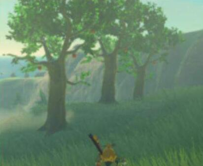

不少玩家在塞尔达传说荒野之息游戏的过程中遇到了塞尔达传说荒野之息苹果树无法匹配苹果的情况，遇到这种问题怎么办呢？小编这里给大家带来了塞尔达传说荒野之息苹果树无法匹配苹果解决办法，一起来看下吧。

苹果树无法匹配苹果解决办法
刷几个血月再回来吧，我也手误砍过，一个血月还刷新不了，等我打完2个大 boss 回来就恢复原样了，过了好几个血月。
塞尔达传说荒野之息苹果树无法匹配苹果问题的解决方法给大家介绍到此，希望对大家有帮助。